1.5 Redes Generativas Adversariales (GANs) en TensorFlow / Keras#
Este notebook cubre las GANs desde sus fundamentos matematicos hasta implementaciones practicas en Keras. Se desarrollan cuatro variantes con complejidad creciente: GAN vanilla, DCGAN, GAN condicional (cGAN) y WGAN-GP. El dataset es MNIST.
Como el entrenamiento de las GANs requiere alternar dos optimizadores y combinar perdidas, se usa tf.GradientTape con bucles de entrenamiento personalizados en lugar de model.fit() estandar.
Contenidos#
Fundamentos matematicos
Preparacion del entorno y datos
GAN vanilla (MLP)
DCGAN (convolucional)
GAN Condicional (cGAN)
WGAN con gradiente penalizado (WGAN-GP)
Problemas comunes y diagnostico
Comparativa de variantes
1. Fundamentos matematicos#
El juego adversarial#
Una GAN (Goodfellow et al., 2014) formula la generacion como un juego de suma cero entre dos redes:
Generador \(G_\theta\): recibe ruido \(z \sim p_z\) y produce muestras sinteticas \(G(z)\).
Discriminador \(D_\phi\): estima la probabilidad de que una muestra sea real, \(D(x) \in [0, 1]\).
Funcion objetivo#
Equilibrio de Nash#
Ocurre cuando \(G\) reproduce \(p_{\text{data}}\) y \(D(x) = 0.5\) para todo \(x\).
Perdida no saturante para G#
En la practica G maximiza \(\log D(G(z))\) en lugar de minimizar \(\log(1 - D(G(z)))\) porque produce gradientes mas fuertes en las etapas tempranas:
2. Preparacion del entorno y datos#
import tensorflow as tf
from tensorflow import keras
from tensorflow.keras import layers
import numpy as np
import matplotlib.pyplot as plt
from collections import defaultdict
tf.random.set_seed(42)
np.random.seed(42)
print(f'TensorFlow : {tf.__version__}')
print(f'GPU : {tf.config.list_physical_devices("GPU")}')
TensorFlow : 2.20.0
GPU : [PhysicalDevice(name='/physical_device:GPU:0', device_type='GPU')]
# Cargar MNIST y normalizar a [-1, 1] (coincide con la salida Tanh del generador)
(x_train, _), (_, _) = keras.datasets.mnist.load_data()
x_train = x_train.astype('float32')
x_train = (x_train - 127.5) / 127.5 # [0, 255] -> [-1, 1]
x_train = np.expand_dims(x_train, -1) # (N, 28, 28, 1)
BATCH_SIZE = 128
Z_DIM = 100
# Pipeline tf.data para entrenamiento eficiente
train_ds = (tf.data.Dataset.from_tensor_slices(x_train)
.shuffle(60000)
.batch(BATCH_SIZE, drop_remainder=True)
.prefetch(tf.data.AUTOTUNE))
print(f'Imagenes : {x_train.shape}')
print(f'Rango de pixeles: [{x_train.min()}, {x_train.max()}]')
print(f'Batches : {len(list(train_ds))}')
def show_grid(imgs, title='', nrow=8, figsize=(14, 3)):
"""Visualiza un grid de imagenes en [-1, 1]."""
imgs = np.clip((imgs + 1) / 2, 0, 1)
n = len(imgs)
cols = min(nrow, n)
rows = int(np.ceil(n / cols))
fig, axes = plt.subplots(rows, cols, figsize=figsize)
axes = np.atleast_2d(axes)
for i in range(rows * cols):
ax = axes.flat[i]
if i < n:
ax.imshow(imgs[i].squeeze(), cmap='gray')
ax.axis('off')
if title: plt.suptitle(title, fontsize=12)
plt.tight_layout()
plt.show()
real_batch = next(iter(train_ds)).numpy()
show_grid(real_batch[:16], 'Imagenes reales de MNIST (normalizadas a [-1, 1])')
Downloading data from https://storage.googleapis.com/tensorflow/tf-keras-datasets/mnist.npz
11490434/11490434 ━━━━━━━━━━━━━━━━━━━━ 0s 0us/step
Imagenes : (60000, 28, 28, 1)
Rango de pixeles: [-1.0, 1.0]
Batches : 468
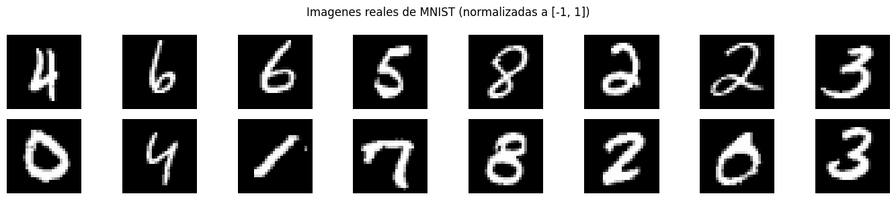
3. GAN Vanilla (MLP)#
Arquitectura original de Goodfellow et al. (2014). Generador y discriminador son redes totalmente conectadas (MLP).
Notas de diseño:
LeakyReLU en lugar de ReLU en D: evita gradientes en cero para valores negativos.
Dropout en D: regularizacion para que D no sea demasiado poderoso.
Tanh en la salida de G: produce valores en \([-1, 1]\).
Sigmoid en la salida de D: probabilidad de ser real.
def build_vanilla_generator(z_dim=100):
"""Generador MLP: z -> imagen."""
return keras.Sequential([
keras.Input(shape=(z_dim,)),
layers.Dense(256), layers.LeakyReLU(negative_slope=0.2),
layers.Dense(512), layers.LeakyReLU(negative_slope=0.2),
layers.Dense(1024), layers.LeakyReLU(negative_slope=0.2),
layers.Dense(784, activation='tanh'),
layers.Reshape((28, 28, 1)),
], name='vanilla_generator')
def build_vanilla_discriminator():
"""Discriminador MLP: imagen -> probabilidad de ser real."""
return keras.Sequential([
keras.Input(shape=(28, 28, 1)),
layers.Flatten(),
layers.Dense(1024), layers.LeakyReLU(negative_slope=0.2), layers.Dropout(0.3),
layers.Dense(512), layers.LeakyReLU(negative_slope=0.2), layers.Dropout(0.3),
layers.Dense(256), layers.LeakyReLU(negative_slope=0.2),
layers.Dense(1, activation='sigmoid'),
], name='vanilla_discriminator')
G_vanilla = build_vanilla_generator(Z_DIM)
D_vanilla = build_vanilla_discriminator()
print(f'Parametros Generador : {G_vanilla.count_params():,}')
print(f'Parametros Discriminador : {D_vanilla.count_params():,}')
Parametros Generador : 1,486,352
Parametros Discriminador : 1,460,225
class GANTrainer:
"""
Bucle de entrenamiento generico para GAN vanilla.
Alterna en cada batch:
1. Actualizar D: maximiza log D(x) + log(1 - D(G(z)))
2. Actualizar G: maximiza log D(G(z)) [perdida no saturante]
Usa label smoothing (0.9 en lugar de 1.0) para estabilizar D.
Adam con beta_1=0.5 es la convencion en GANs (0.9 default tiende a oscilar).
"""
def __init__(self, generator, discriminator, z_dim=100, lr=2e-4):
self.G = generator
self.D = discriminator
self.z_dim = z_dim
self.opt_G = keras.optimizers.Adam(lr, beta_1=0.5, beta_2=0.999)
self.opt_D = keras.optimizers.Adam(lr, beta_1=0.5, beta_2=0.999)
self.bce = keras.losses.BinaryCrossentropy()
@tf.function
def train_step(self, real_imgs):
bs = tf.shape(real_imgs)[0]
# ---- Paso 1: Discriminador ----
z = tf.random.normal((bs, self.z_dim))
fake_imgs = self.G(z, training=True)
with tf.GradientTape() as tape:
d_real = self.D(real_imgs, training=True)
d_fake = self.D(fake_imgs, training=True)
real_lbl = tf.ones_like(d_real) * 0.9 # label smoothing
fake_lbl = tf.zeros_like(d_fake)
loss_D = (self.bce(real_lbl, d_real) + self.bce(fake_lbl, d_fake)) / 2
grads = tape.gradient(loss_D, self.D.trainable_variables)
self.opt_D.apply_gradients(zip(grads, self.D.trainable_variables))
# ---- Paso 2: Generador ----
z = tf.random.normal((bs, self.z_dim))
with tf.GradientTape() as tape:
fake_imgs = self.G(z, training=True)
d_fake = self.D(fake_imgs, training=True)
# G quiere que D clasifique sus imagenes como reales
loss_G = self.bce(tf.ones_like(d_fake) * 0.9, d_fake)
grads = tape.gradient(loss_G, self.G.trainable_variables)
self.opt_G.apply_gradients(zip(grads, self.G.trainable_variables))
return loss_D, loss_G
def train(self, dataset, epochs=30, viz_every=10):
history = defaultdict(list)
fixed_z = tf.random.normal((16, self.z_dim))
for epoch in range(1, epochs + 1):
d_total = g_total = 0.0
n_batches = 0
for real_imgs in dataset:
lD, lG = self.train_step(real_imgs)
d_total += float(lD); g_total += float(lG); n_batches += 1
history['D'].append(d_total / n_batches)
history['G'].append(g_total / n_batches)
if epoch % viz_every == 0 or epoch == 1:
print(f'Epoca {epoch:3d}/{epochs} Loss D: {history["D"][-1]:.4f} Loss G: {history["G"][-1]:.4f}')
samples = self.G(fixed_z, training=False).numpy()
show_grid(samples, f'Epoca {epoch}', nrow=8, figsize=(14, 3))
return history
print('Entrenando GAN vanilla...')
trainer_v = GANTrainer(G_vanilla, D_vanilla, z_dim=Z_DIM)
history_vanilla = trainer_v.train(train_ds, epochs=30)
Entrenando GAN vanilla...
Epoca 1/30 Loss D: 0.5228 Loss G: 1.2896
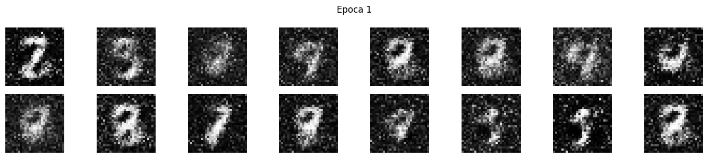
Epoca 10/30 Loss D: 0.5640 Loss G: 1.2256
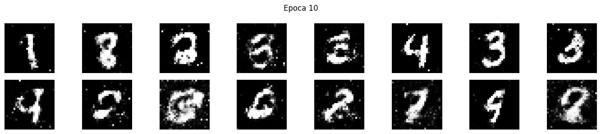
Epoca 20/30 Loss D: 0.6145 Loss G: 1.0546
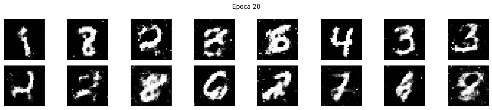
Epoca 30/30 Loss D: 0.6242 Loss G: 1.0220
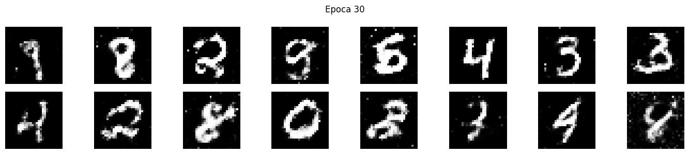
def plot_gan_losses(history, title='Curvas GAN'):
"""
Curvas de perdida G y D.
En equilibrio teorico la perdida de D converge a ln(2) ~ 0.693
(50% de acierto: D no puede distinguir reales de falsos).
"""
plt.figure(figsize=(9, 4))
plt.plot(history['D'], label='Discriminador', color='crimson', linewidth=2)
plt.plot(history['G'], label='Generador', color='steelblue', linewidth=2)
plt.axhline(np.log(2), color='gray', linestyle='--', linewidth=1,
label=f'Equilibrio teorico (ln 2 = {np.log(2):.3f})')
plt.xlabel('Epoca'); plt.ylabel('Perdida BCE')
plt.title(title); plt.legend(); plt.grid(True, alpha=0.3)
plt.tight_layout()
plt.show()
plot_gan_losses(history_vanilla, 'Curvas - GAN vanilla')
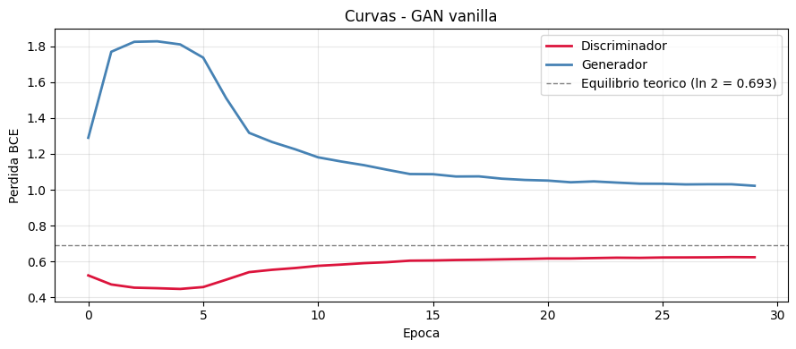
4. DCGAN — Deep Convolutional GAN#
Radford et al. (2015) estabilizaron el entrenamiento con reglas arquitectonicas:
Componente |
Regla |
|---|---|
Pooling |
Eliminado. Se usa stride en Conv y Conv2DTranspose |
BatchNormalization |
En todas las capas excepto entrada de D y salida de G |
Capas densas |
Eliminadas |
Activacion en G |
ReLU en ocultas, Tanh en salida |
Activacion en D |
LeakyReLU(0.2) en todas |
def build_dc_generator(z_dim=100):
"""
Generador DCGAN.
Conv2DTranspose con stride=2 duplica la resolucion en cada capa.
"""
return keras.Sequential([
keras.Input(shape=(z_dim,)),
layers.Dense(256 * 7 * 7),
layers.ReLU(),
layers.Reshape((7, 7, 256)),
# (7, 7, 256) -> (14, 14, 128)
layers.Conv2DTranspose(128, 4, strides=2, padding='same', use_bias=False),
layers.BatchNormalization(),
layers.ReLU(),
# (14, 14, 128) -> (28, 28, 64)
layers.Conv2DTranspose(64, 4, strides=2, padding='same', use_bias=False),
layers.BatchNormalization(),
layers.ReLU(),
# (28, 28, 64) -> (28, 28, 1) Tanh sin BN en la salida
layers.Conv2D(1, 3, padding='same', activation='tanh', use_bias=False),
], name='dc_generator')
def build_dc_discriminator():
"""
Discriminador DCGAN.
Conv2D con stride=2 reduce la resolucion (en lugar de MaxPool).
Sin BN en la primera capa (trabaja con pixeles directos).
"""
return keras.Sequential([
keras.Input(shape=(28, 28, 1)),
# (28, 28, 1) -> (14, 14, 64)
layers.Conv2D(64, 4, strides=2, padding='same', use_bias=False),
layers.LeakyReLU(negative_slope=0.2),
# (14, 14, 64) -> (7, 7, 128)
layers.Conv2D(128, 4, strides=2, padding='same', use_bias=False),
layers.BatchNormalization(),
layers.LeakyReLU(negative_slope=0.2),
layers.Flatten(),
layers.Dense(1, activation='sigmoid'),
], name='dc_discriminator')
G_dc = build_dc_generator(Z_DIM)
D_dc = build_dc_discriminator()
print(f'Parametros Generador : {G_dc.count_params():,}')
print(f'Parametros Discriminador : {D_dc.count_params():,}')
# Verificar dimensiones
z_test = tf.random.normal((2, Z_DIM))
out_G = G_dc(z_test)
out_D = D_dc(out_G)
print(f'\nForma salida G : {out_G.shape}')
print(f'Forma salida D : {out_D.shape}')
Parametros Generador : 1,923,648
Parametros Discriminador : 138,881
Forma salida G : (2, 28, 28, 1)
Forma salida D : (2, 1)
# El bucle de entrenamiento es el mismo que en la GAN vanilla
# La diferencia esta en la arquitectura, no en el algoritmo
print('Entrenando DCGAN...')
trainer_dc = GANTrainer(G_dc, D_dc, z_dim=Z_DIM)
history_dc = trainer_dc.train(train_ds, epochs=30)
plot_gan_losses(history_dc, 'Curvas - DCGAN')
Entrenando DCGAN...
Epoca 1/30 Loss D: 0.5844 Loss G: 1.0471
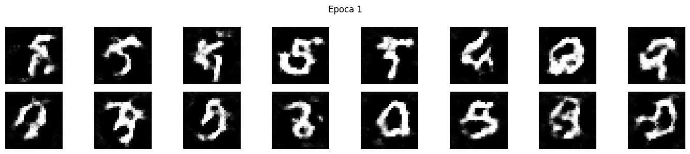
Epoca 10/30 Loss D: 0.6566 Loss G: 0.9019
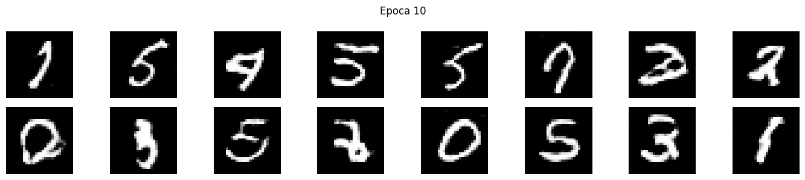
Epoca 20/30 Loss D: 0.6677 Loss G: 0.8694
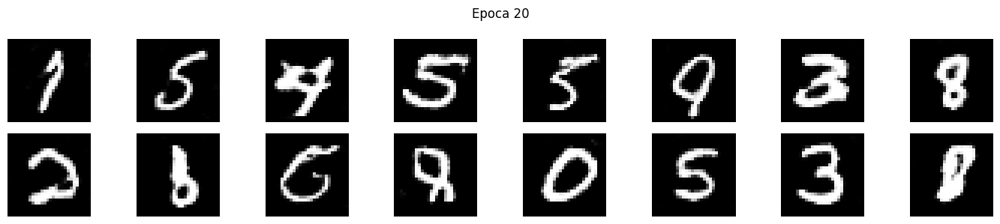
Epoca 30/30 Loss D: 0.6742 Loss G: 0.8558
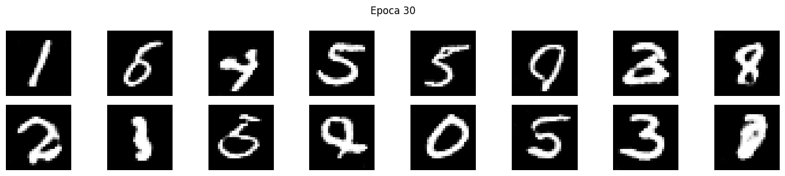
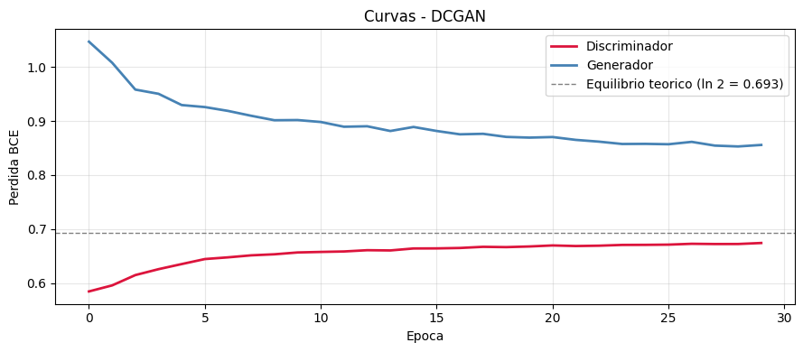
# Comparar muestras: GAN vanilla vs DCGAN
fixed_z = tf.random.normal((16, Z_DIM))
for G, name in [(G_vanilla, 'GAN Vanilla (MLP)'), (G_dc, 'DCGAN (Convolucional)')]:
samples = G(fixed_z, training=False).numpy()
show_grid(samples, f'Muestras - {name}', nrow=8, figsize=(14, 3))
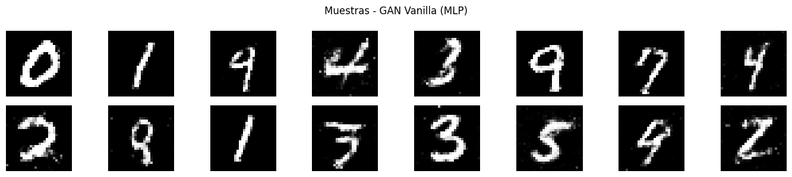
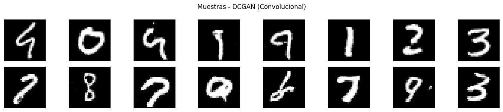
5. GAN Condicional (cGAN)#
La cGAN (Mirza & Osindero, 2014) condiciona G y D en una etiqueta de clase \(y\):
Permite controlar exactamente que digito se genera mediante la etiqueta. La condicion se incorpora con un embedding que se concatena al ruido.
# Reusar MNIST con etiquetas
(_, y_train_full), (_, _) = keras.datasets.mnist.load_data()
# Pipeline con etiquetas
train_ds_labeled = (tf.data.Dataset.from_tensor_slices((x_train, y_train_full))
.shuffle(60000)
.batch(BATCH_SIZE, drop_remainder=True)
.prefetch(tf.data.AUTOTUNE))
N_CLASSES = 10
EMBED_DIM = 50
def build_conditional_generator(z_dim=100, n_classes=10, embed_dim=50):
"""
Generador condicional con dos entradas: z (ruido) e y (clase).
El embedding convierte la clase entera en un vector denso aprendible.
"""
z_in = keras.Input(shape=(z_dim,))
y_in = keras.Input(shape=(1,), dtype=tf.int32)
y_emb = layers.Embedding(n_classes, embed_dim)(y_in)
y_emb = layers.Flatten()(y_emb)
x = layers.Concatenate()([z_in, y_emb])
x = layers.Dense(256)(x)
x = layers.LeakyReLU(negative_slope=0.2)(x)
x = layers.BatchNormalization()(x)
x = layers.Dense(512)(x)
x = layers.LeakyReLU(negative_slope=0.2)(x)
x = layers.BatchNormalization()(x)
x = layers.Dense(1024)(x)
x = layers.LeakyReLU(negative_slope=0.2)(x)
x = layers.BatchNormalization()(x)
x = layers.Dense(784, activation='tanh')(x)
out = layers.Reshape((28, 28, 1))(x)
return keras.Model([z_in, y_in], out, name='conditional_generator')
def build_conditional_discriminator(n_classes=10, embed_dim=50):
x_in = keras.Input(shape=(28, 28, 1))
y_in = keras.Input(shape=(1,), dtype=tf.int32)
y_emb = layers.Embedding(n_classes, embed_dim)(y_in)
y_emb = layers.Flatten()(y_emb)
x = layers.Flatten()(x_in)
x = layers.Concatenate()([x, y_emb])
x = layers.Dense(1024)(x)
x = layers.LeakyReLU(negative_slope=0.2)(x)
x = layers.Dropout(0.3)(x)
x = layers.Dense(512)(x)
x = layers.LeakyReLU(negative_slope=0.2)(x)
x = layers.Dropout(0.3)(x)
x = layers.Dense(256)(x)
x = layers.LeakyReLU(negative_slope=0.2)(x)
out = layers.Dense(1, activation='sigmoid')(x)
return keras.Model([x_in, y_in], out, name='conditional_discriminator')
G_cond = build_conditional_generator(Z_DIM, N_CLASSES, EMBED_DIM)
D_cond = build_conditional_discriminator(N_CLASSES, EMBED_DIM)
print(f'Parametros G_cond : {G_cond.count_params():,}')
print(f'Parametros D_cond : {D_cond.count_params():,}')
Parametros G_cond : 1,506,820
Parametros D_cond : 1,511,925
# Bucle de entrenamiento condicional
opt_G_c = keras.optimizers.Adam(2e-4, beta_1=0.5)
opt_D_c = keras.optimizers.Adam(2e-4, beta_1=0.5)
bce_c = keras.losses.BinaryCrossentropy()
@tf.function
def train_step_cgan(real_imgs, real_labels):
bs = tf.shape(real_imgs)[0]
# ---- D ----
z = tf.random.normal((bs, Z_DIM))
rand_lbls = tf.random.uniform((bs, 1), 0, N_CLASSES, dtype=tf.int32)
fake_imgs = G_cond([z, rand_lbls], training=True)
with tf.GradientTape() as tape:
d_real = D_cond([real_imgs, tf.expand_dims(real_labels, -1)], training=True)
d_fake = D_cond([fake_imgs, rand_lbls], training=True)
loss_D = (bce_c(tf.ones_like(d_real)*0.9, d_real)
+ bce_c(tf.zeros_like(d_fake), d_fake)) / 2
grads = tape.gradient(loss_D, D_cond.trainable_variables)
opt_D_c.apply_gradients(zip(grads, D_cond.trainable_variables))
# ---- G ----
z = tf.random.normal((bs, Z_DIM))
rand_lbls = tf.random.uniform((bs, 1), 0, N_CLASSES, dtype=tf.int32)
with tf.GradientTape() as tape:
fake_imgs = G_cond([z, rand_lbls], training=True)
d_fake = D_cond([fake_imgs, rand_lbls], training=True)
loss_G = bce_c(tf.ones_like(d_fake)*0.9, d_fake)
grads = tape.gradient(loss_G, G_cond.trainable_variables)
opt_G_c.apply_gradients(zip(grads, G_cond.trainable_variables))
return loss_D, loss_G
history_cgan = defaultdict(list)
fixed_z_c = tf.random.normal((20, Z_DIM))
fixed_y_c = tf.constant([[i] for i in range(10) for _ in range(2)], dtype=tf.int32)
print('Entrenando cGAN...')
for epoch in range(1, 31):
d_t = g_t = 0.0; n = 0
for imgs, lbls in train_ds_labeled:
lD, lG = train_step_cgan(imgs, lbls)
d_t += float(lD); g_t += float(lG); n += 1
history_cgan['D'].append(d_t/n); history_cgan['G'].append(g_t/n)
if epoch % 10 == 0 or epoch == 1:
print(f'Epoca {epoch:3d}/30 Loss D: {d_t/n:.4f} Loss G: {g_t/n:.4f}')
samples = G_cond([fixed_z_c, fixed_y_c], training=False).numpy()
show_grid(samples, f'cGAN - Epoca {epoch} (clases 0-9, x2)', nrow=10, figsize=(14, 3))
plot_gan_losses(history_cgan, 'Curvas - cGAN')
Entrenando cGAN...
Epoca 1/30 Loss D: 0.4474 Loss G: 2.5121
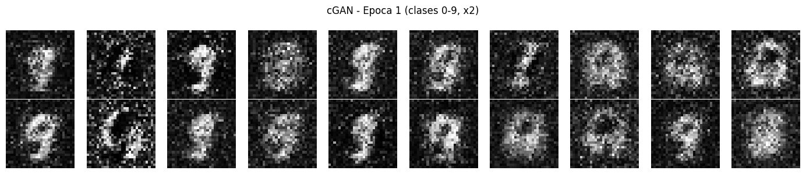
Epoca 10/30 Loss D: 0.6146 Loss G: 1.0415
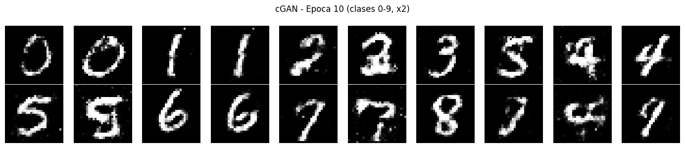
Epoca 20/30 Loss D: 0.6604 Loss G: 0.8888
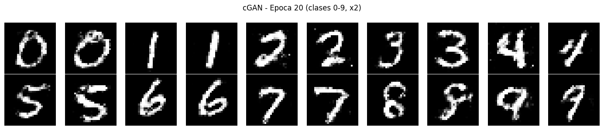
Epoca 30/30 Loss D: 0.6681 Loss G: 0.8590
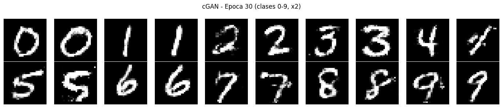
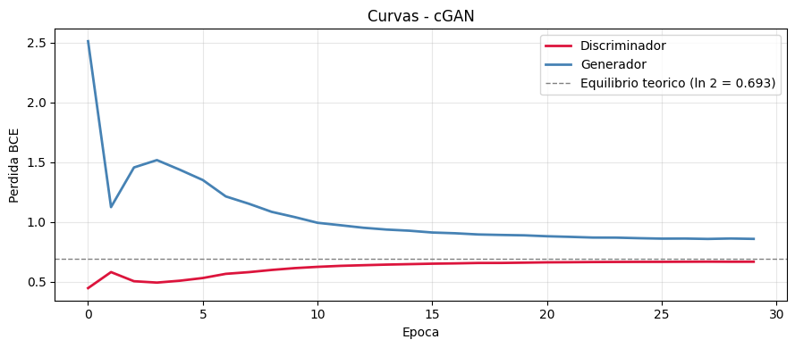
# Demostracion: control por clase con el mismo ruido
n_per_class = 8
fig, axes = plt.subplots(N_CLASSES, n_per_class, figsize=(n_per_class*1.5, N_CLASSES*1.5))
for digit in range(N_CLASSES):
z = tf.random.normal((n_per_class, Z_DIM))
labels = tf.constant([[digit]] * n_per_class, dtype=tf.int32)
imgs = G_cond([z, labels], training=False).numpy()
imgs = np.clip((imgs + 1) / 2, 0, 1)
for i in range(n_per_class):
axes[digit, i].imshow(imgs[i].squeeze(), cmap='gray')
axes[digit, i].axis('off')
axes[digit, 0].set_ylabel(f'{digit}', fontsize=11, rotation=0, labelpad=20, va='center')
plt.suptitle('cGAN: generacion controlada por clase (cada fila = un digito)', fontsize=13)
plt.tight_layout()
plt.show()
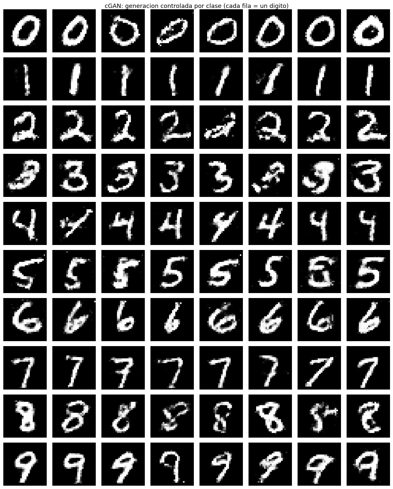
6. WGAN con Gradiente Penalizado (WGAN-GP)#
Problema de la GAN vanilla#
La perdida BCE mide la divergencia Jensen-Shannon. Cuando \(p_{\text{data}}\) y \(p_G\) tienen soporte disjunto (frecuente al inicio), JS es constante y los gradientes se anulan.
Distancia de Wasserstein#
El discriminador se convierte en critico (sin sigmoid): produce un score real en \((-\infty, +\infty)\).
Gradient Penalty#
donde \(\hat{x}\) se interpola entre real y falso. Impone Lipschitz de forma suave.
def build_wgan_generator(z_dim=100):
"""Generador WGAN-GP. Misma arquitectura que DCGAN."""
return keras.Sequential([
keras.Input(shape=(z_dim,)),
layers.Dense(256 * 7 * 7), layers.ReLU(),
layers.Reshape((7, 7, 256)),
layers.Conv2DTranspose(128, 4, strides=2, padding='same', use_bias=False),
layers.BatchNormalization(), layers.ReLU(),
layers.Conv2DTranspose(64, 4, strides=2, padding='same', use_bias=False),
layers.BatchNormalization(), layers.ReLU(),
layers.Conv2D(1, 3, padding='same', activation='tanh', use_bias=False),
], name='wgan_generator')
def build_wgan_critic():
"""
Critico para WGAN-GP.
Diferencias clave:
- Sin sigmoid (produce score real en (-inf, +inf)).
- Sin BatchNorm (interfiere con el calculo del gradiente penalizado).
Se usa LayerNormalization en su lugar.
"""
return keras.Sequential([
keras.Input(shape=(28, 28, 1)),
layers.Conv2D(64, 4, strides=2, padding='same', use_bias=False),
layers.LeakyReLU(negative_slope=0.2),
layers.Conv2D(128, 4, strides=2, padding='same', use_bias=False),
layers.LayerNormalization(), # en lugar de BatchNorm
layers.LeakyReLU(negative_slope=0.2),
layers.Flatten(),
layers.Dense(1), # SIN sigmoid
], name='wgan_critic')
G_wgan = build_wgan_generator(Z_DIM)
C_wgan = build_wgan_critic()
print(f'Parametros Generador : {G_wgan.count_params():,}')
print(f'Parametros Critico : {C_wgan.count_params():,}')
Parametros Generador : 1,923,648
Parametros Critico : 138,625
# WGAN-GP: hyperparametros
WGAN_LR = 1e-4
N_CRITIC = 5 # actualizaciones de C por cada actualizacion de G
LAMBDA_GP = 10.0
opt_G_w = keras.optimizers.Adam(WGAN_LR, beta_1=0.0, beta_2=0.9)
opt_C_w = keras.optimizers.Adam(WGAN_LR, beta_1=0.0, beta_2=0.9)
# beta_1=0 recomendado en WGAN-GP
@tf.function
def gradient_penalty(real_imgs, fake_imgs):
"""
Calcula la gradient penalty.
1. Interpolar uniformemente entre real y falso: x_hat = a*real + (1-a)*fake
2. Calcular gradiente de C(x_hat) respecto a x_hat
3. Penalizar si la norma se aleja de 1
"""
bs = tf.shape(real_imgs)[0]
alpha = tf.random.uniform((bs, 1, 1, 1), 0.0, 1.0)
x_hat = alpha * real_imgs + (1 - alpha) * fake_imgs
with tf.GradientTape() as tape:
tape.watch(x_hat)
score = C_wgan(x_hat, training=True)
grads = tape.gradient(score, x_hat)
grads_norm = tf.sqrt(tf.reduce_sum(tf.square(grads), axis=[1, 2, 3]))
return tf.reduce_mean((grads_norm - 1.0) ** 2)
@tf.function
def train_step_wgan(real_imgs):
bs = tf.shape(real_imgs)[0]
# ---- Actualizar Critico N_CRITIC veces ----
for _ in range(N_CRITIC):
z = tf.random.normal((bs, Z_DIM))
with tf.GradientTape() as tape:
fake_imgs = G_wgan(z, training=True)
score_real = C_wgan(real_imgs, training=True)
score_fake = C_wgan(fake_imgs, training=True)
gp = gradient_penalty(real_imgs, fake_imgs)
# Minimizar E[C(fake)] - E[C(real)] + lambda*GP
loss_C = (tf.reduce_mean(score_fake) - tf.reduce_mean(score_real)
+ LAMBDA_GP * gp)
grads = tape.gradient(loss_C, C_wgan.trainable_variables)
opt_C_w.apply_gradients(zip(grads, C_wgan.trainable_variables))
# ---- Actualizar Generador ----
z = tf.random.normal((bs, Z_DIM))
with tf.GradientTape() as tape:
fake_imgs = G_wgan(z, training=True)
loss_G = -tf.reduce_mean(C_wgan(fake_imgs, training=True))
grads = tape.gradient(loss_G, G_wgan.trainable_variables)
opt_G_w.apply_gradients(zip(grads, G_wgan.trainable_variables))
return loss_C, loss_G
history_wgan = defaultdict(list)
fixed_z_w = tf.random.normal((16, Z_DIM))
print('Entrenando WGAN-GP...')
for epoch in range(1, 31):
c_t = g_t = 0.0; n = 0
for real_imgs in train_ds:
lC, lG = train_step_wgan(real_imgs)
c_t += float(lC); g_t += float(lG); n += 1
history_wgan['C'].append(c_t/n); history_wgan['G'].append(g_t/n)
if epoch % 10 == 0 or epoch == 1:
wdist = -(c_t/n)
print(f'Epoca {epoch:3d}/30 Loss C: {c_t/n:.4f} Loss G: {g_t/n:.4f} W-dist aprox: {wdist:.4f}')
samples = G_wgan(fixed_z_w, training=False).numpy()
show_grid(samples, f'WGAN-GP - Epoca {epoch}', nrow=8, figsize=(14, 3))
Entrenando WGAN-GP...
Epoca 1/30 Loss C: -3.8365 Loss G: -22.8834 W-dist aprox: 3.8365
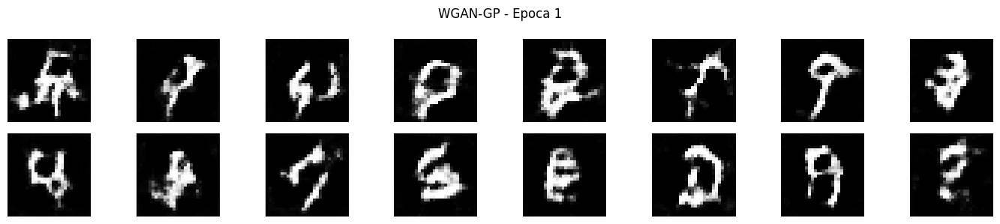
Epoca 10/30 Loss C: -0.1911 Loss G: -14.6452 W-dist aprox: 0.1911
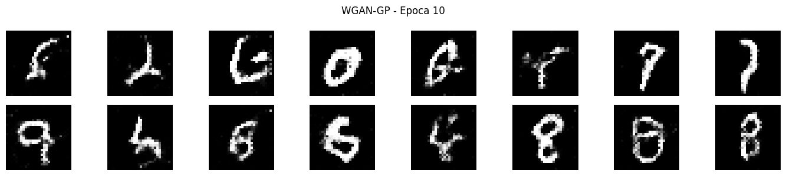
# Curvas de WGAN-GP: la perdida del critico tiene interpretacion directa
fig, axes = plt.subplots(1, 2, figsize=(12, 4))
axes[0].plot(history_wgan['C'], color='crimson', linewidth=2)
axes[0].set_title('Perdida del Critico\n(negativo aprox. de la distancia Wasserstein)')
axes[0].set_xlabel('Epoca'); axes[0].grid(True, alpha=0.3)
axes[1].plot(history_wgan['G'], color='steelblue', linewidth=2)
axes[1].set_title('Perdida del Generador\n(-E[C(fake)])')
axes[1].set_xlabel('Epoca'); axes[1].grid(True, alpha=0.3)
plt.suptitle('Curvas - WGAN-GP', fontsize=13)
plt.tight_layout()
plt.show()
print('Nota: en WGAN-GP, la perdida del critico es significativa.')
print('Si disminuye (se hace mas negativa), la distancia Wasserstein decrece: G mejora.')
7. Problemas comunes y diagnostico#
def check_diversity(generator, z_dim, n_samples=128):
"""
Detecta mode collapse midiendo la diversidad de las imagenes generadas.
Mode collapse: G produce siempre el mismo output (std baja).
"""
z = tf.random.normal((n_samples, z_dim))
imgs = generator(z, training=False).numpy()
imgs = (imgs + 1) / 2
return float(np.mean(np.std(imgs, axis=0)))
print('Diversidad de muestras (std promedio por pixel):')
print('Mas alta = mas diversidad. Cercana a 0 = mode collapse.\n')
for G, name in [(G_vanilla, 'GAN Vanilla'), (G_dc, 'DCGAN'), (G_wgan, 'WGAN-GP')]:
div = check_diversity(G, Z_DIM)
print(f' {name:<15}: {div:.4f}')
# Tabla de diagnostico
diagnostico = [
('Mode Collapse', 'G produce siempre el mismo output',
'WGAN-GP, Minibatch Disc., aumentar z_dim'),
('Vanishing Gradients', 'D demasiado bueno, gradientes de G ~0',
'WGAN-GP, Feature Matching, reducir D'),
('Inestabilidad', 'Perdidas oscilan, muestras degeneran',
'Label smoothing, beta_1=0.5, BN, lr menor'),
('G no mejora', 'Las muestras no cambian a lo largo de las epocas',
'Verificar gradientes, mas updates de G'),
('D colapsa a 0', 'D aprende muy rapido, loss_D -> 0',
'Reducir D, Dropout, menos updates de D'),
]
print(f'{"Problema":<22} {"Sintoma":<48} {"Soluciones"}')
print('-' * 120)
for prob, sint, sol in diagnostico:
print(f'{prob:<22} {sint:<48} {sol}')
8. Comparativa de variantes#
# Visualizar muestras finales de las 4 variantes
fixed_z = tf.random.normal((16, Z_DIM))
fixed_y7 = tf.constant([[7]]*16, dtype=tf.int32)
fig, axes = plt.subplots(4, 16, figsize=(24, 7))
nombres = ['GAN Vanilla (MLP)', 'DCGAN', 'cGAN (digito 7)', 'WGAN-GP']
outputs = [
G_vanilla(fixed_z, training=False).numpy(),
G_dc(fixed_z, training=False).numpy(),
G_cond([fixed_z, fixed_y7], training=False).numpy(),
G_wgan(fixed_z, training=False).numpy(),
]
for row, (imgs, nombre) in enumerate(zip(outputs, nombres)):
imgs = np.clip((imgs + 1) / 2, 0, 1)
for col in range(16):
axes[row, col].imshow(imgs[col].squeeze(), cmap='gray')
axes[row, col].axis('off')
axes[row, 0].set_ylabel(nombre, fontsize=9, rotation=0, labelpad=85, va='center')
plt.suptitle('Comparativa de muestras generadas - todas las variantes', fontsize=13)
plt.tight_layout()
plt.show()
# Tabla resumen
tabla = [
('GAN Vanilla', 'MLP', 'BCE (minimax)', 'No', 'Baja', 'Prototipos, demos'),
('DCGAN', 'Conv/ConvTranspose', 'BCE no saturante', 'No', 'Media', 'Generacion de imagenes'),
('cGAN', 'MLP + Embedding', 'BCE condicional', 'Si', 'Media', 'Generacion controlada'),
('WGAN-GP', 'Conv + GP', 'Wasserstein + GP', 'No', 'Alta', 'Estabilidad critica'),
('Pix2Pix', 'U-Net + PatchGAN', 'BCE + L1', 'Si', 'Media', 'Imagen a imagen'),
('CycleGAN', 'ResNet + 2 D', 'BCE + ciclo', 'Si', 'Media', 'Sin pares'),
('StyleGAN2/3', 'Mapping + Synth.', 'No-sat + R1 reg.', 'Si', 'Alta', 'Alta resolucion'),
('BigGAN', 'Conv + Class BN', 'Hinge loss', 'Si', 'Alta', 'Datasets grandes'),
]
print('Resumen comparativo de variantes de GAN')
print('=' * 105)
print(f'{"Variante":<14} {"Arquitectura":<22} {"Perdida":<20} {"Control":<8} {"Estabilidad":<12} {"Uso"}')
print('-' * 105)
for row in tabla:
print(f'{row[0]:<14} {row[1]:<22} {row[2]:<20} {row[3]:<8} {row[4]:<12} {row[5]}')
Conclusiones#
GAN Vanilla: la formulacion original. Funciona pero es fragil: susceptible a mode collapse, vanishing gradients y oscilaciones.
DCGAN: convolucion, BatchNorm e inicializacion cuidadosa estabilizan el entrenamiento.
cGAN: extension con embeddings de clase, permite controlar exactamente que tipo de imagen se genera.
WGAN-GP: distancia de Wasserstein + gradient penalty resuelve los problemas de estabilidad. La perdida del critico tiene interpretacion directa: si baja, G mejora. Es la variante mas robusta de las implementadas.
Eleccion segun el caso de uso:
Prototipado rapido: DCGAN.
Control de clase: cGAN.
Estabilidad critica o datos complejos: WGAN-GP.
Alta resolucion: StyleGAN2/3 o modelos de difusion.
Referencias#
Goodfellow, I., et al. (2014). Generative adversarial nets. NeurIPS 2014.
Radford, A., Metz, L., & Chintala, S. (2015). Unsupervised representation learning with DCGANs. arXiv:1511.06434.
Mirza, M., & Osindero, S. (2014). Conditional GANs. arXiv:1411.1784.
Arjovsky, M., Chintala, S., & Bottou, L. (2017). Wasserstein GAN. arXiv:1701.07875.
Gulrajani, I., et al. (2017). Improved training of Wasserstein GANs. NeurIPS 2017.